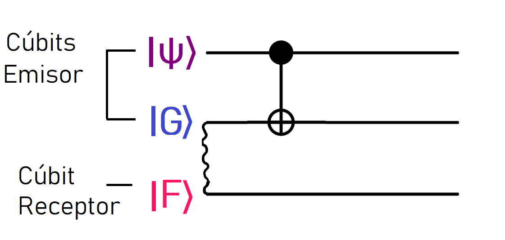
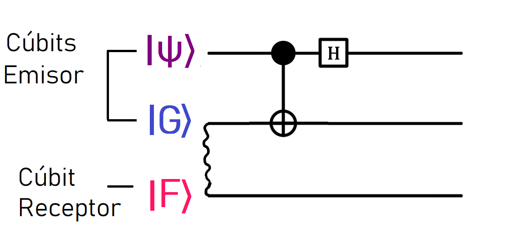

Paso - 0: Volver a lo básico
It’s easy to forget that the programs we write are essentially just manipulating a bunch of 0s and 1s stored in our ‘classical’ computer. These are discrete, binary states.
Quantum computers however operate on continuous states – that’s part of what makes them so powerful.
So instead of a classical bit being ‘on’ or ‘off’ like a light switch, in a quantum computer we have qubits, which are more like a dimmer switch, being any possible combination of ‘on’ and ‘off’ in between.
Just as bits are the fundamental object of information in classical computing, qubits (quantum bits) are the fundamental object of information in quantum computing. To understand this correspondence, let's look at the simplest example: a single qubit.
Paso - 1: Midiendo un cúbit
While a bit, or binary digit, can have value either 00 or 11, a qubit can have a value that is either of these or a quantum superposition of 00 and 11.

The state of a single qubit can be described by a two-dimensional column vector of unit norm, that is, the magnitude squared of its entries must sum to 11. This vector, called the quantum state vector, holds all the information needed to describe the one-qubit quantum system just as a single bit holds all of the information needed to describe the state of a binary variable.
Además, el emisor posee un cúbit |G⟩, que, como acabamos de describir, ahora está entrelazado con mi cúbit, |F⟩ (ilustrado con línea ondulada). Ahora ambos se encuentran en un estado de Bell:
Comenzaremos por entrelazar el cúbit del emisor |G⟩, con el estado |ψ⟩. El motivo por el que se realiza esto será evidenciado en breve, para esto requerimos de su confianza. En el curso básico, aprendimos que podemos entrelazar dos cúbits aplicando una puerta CNOT y luego una puerta Hadamard. Podemos describir esto utilizando un circuito cuántico, como se muestra a continuación.
Paso - 1.1: Aplicar compuerta cuántica CNOT

Este es nuestro circuito una vez que hemos agregado la compuerta CNOT a la mezcla. El estado de entrada de la compuerta CNOT se puede escribir como |ψ⟩ |G⟩, donde la primera entrada corresponde al cable superior y la segunda entrada corresponde al cable central. Reemplazando |ψ⟩ y |G⟩ con sus definiciones, tenemos
Podemos multiplicar los paréntesis, como se muestra a continuación:
Esto nos da la entrada .Cada uno de estos términos es operado por la puerta CNOT. Recordemos que la puerta "CNOT" opera en dos cúbits. Notarás que cada uno de nuestros términos |000〉, |011〉, |100〉 y |111〉 tienen tres cúbits. En este caso, los dos primeros cúbits se utilizan como control y destino, como se muestra a continuación:
Cuando el valor de control es |1〉, el qubit objetivo se invierte. Esto significa que el estado |100〉, se convierte en |110〉, y |111〉 se convierte en |101〉. Todos los demás estados siguen siendo los mismos.
Una vez que la puerta CNOT ha operado, obtenemos el resultadobr/>
Paso - 1.2: Aplicar compuerta Hadamard
El siguiente paso para entrelazar |G⟩ con el estado |ψ⟩ es aplicar la puerta de Hadamard al primer cúbit. Podemos ver cómo se ve en el circuito cuántico a continuación.

Recordemos que la compuerta de Hadamard, transforma |0⟩ y |1⟩, a los siguientes estados:
La salida de la puerta CNOT fue .Es hora de aplicar la puerta de Hadamard al primer cúbit de cada término. Lo que viene no se ve bonito, pero respira hondo, esta es nuestra salida:
Así, nuestro resultado queda como se muestra a continuación:
Ordenando términos
Vamos a poner esto en orden. Si observamos el primer término
, notarán que tenemos dos factores de √2, los sacaremos de sus fracciones y los multiplicaremos como
Aplicando la misma lógica a los términos restantes, obtenemos ,

y . Notarás que el factor ½ es común para cada uno de ellos, por lo que podemos tomarlo fuera de los corchetes dando el resultado colectivo:
Ahora vamos a expandir los corchetes con el fin de facilitar el próximo paso. Primeramente, ampliamos , como ejemplo.
Dejaremos los restantes "como ejercicio", sin embargo, dejamos los resultados a continuación:
Reuniéndolos todos juntos, obtenemos el siguiente resultado:
Paso - 2: Efectuar medición
Ahora que hemos entrelazado el cúbit
|G⟩ del emisor con el cúbit
|ψ⟩ del receptor, vamos a medir a ambos. Pero antes de hacerlo, debemos obtener nuestros resultados en un formato que sea más fácil de interpretar.
Siguiente
Curso avanzado: Tele-transportación cuántica de datos